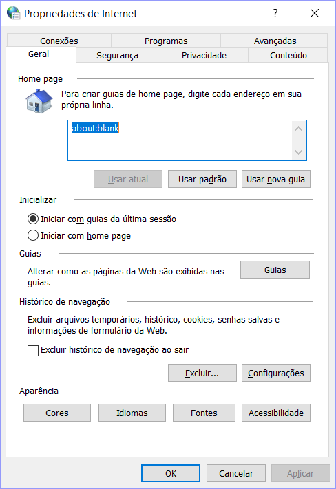
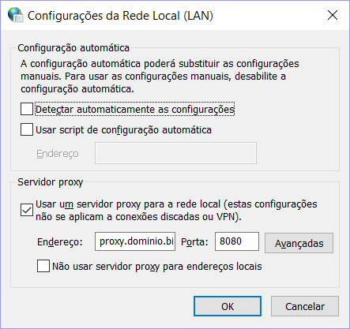

Trabalhar em um ambiente corporativo nem sempre é simples. Especialmente se você realizar programação mesmo sem ser da área de TI. Na verdade, quanto maior a empresa, maiores as chances de haver regras draconianas a respeito de software desenvolvido localmente. Algumas empresas chegam até a proibi-los.
Outras empresas não chegam a esse ponto, mas nem por isso facilitam a vida daqueles que desenvolvem por natureza, em geral pequenos aplicativos para facilitar no dia-a-dia. Após alguma ralação, consegui fazer alguns aplicativos básicos funcionarem. Em especial, costuma ser difícil obter acesso à rede para aplicativos de linha de comando. Mais particularmente, é comum haver em empresas grandes alguma forma de proxy com autenticação.
Em determinados casos, pode ser que um usuário desavisado nem perceba, uma vez que esses proxies podem ser transparentes e operar com autenticação Single Sign-On (estilo SPNEGO + Kerberos). No entanto, nem todas as ferramentas suportam esse tipo de autenticação, e às vezes as que suportam precisam de plugins, configurações elaboradas ou até mesmo o armazenamento de senhas em claro (!!!). Das ferramentas mais comuns ao desenvolvedor, saltam à mente ferramentas vindas do Linux, as quais nem sempre suportam autenticação do tipo NTLM, mais comum no mundo corporativo do Windows. Em especial, vou focar na biblioteca requests do Python, nos DVCS Git e Mercurial e nos gerenciadores de pacotes Conda e pip.
Enfim, vamos ao que interessa.
Plano
Nota:
Estou considerando que a empresa dentro da qual este procedimento será aplicado permite esse tipo de utilização de rede. Se você estiver em dúvida, consulte as regras da sua empresa ou o administrador da rede/suporte de TI.
Nota:
Este procedimento não contorna ou evita o rastreamento que sua empresa pode empregar. Iremos usar o próprio proxy da empresa, logo caso a empresa bloqueie o acesso a determinados sites que você queira usar, você ainda será bloqueado. Em dúvida, teste o site no seu navegador: se houver alguma mensagem de bloqueio, então é o proxy da empresa que o bloqueará, não a limitação dos software que estamos tentando contornar.
Algumas ferramentas até suportam a autenticação NTLM, seja diretamente, seja através de plugins. No entanto, algumas não a suportam e vou focar nessa hipótese. Para contornar esse problema, irei utilizar um proxy local que suporta a autenticação. Ou seja, irei configurar a ferramenta para acessar o proxy local e este irá redirecionar a requisição para o proxy corporativo, realizando a autenticação NTLM para a ferramenta.
De forma geral, precisamos fazer os seguintes passos:
- Obter o endereço do proxy corporativo.
- Configurar o proxy local.
- Redirecionar as ferramentas para o proxy local.
Obtendo o endereço do proxy corporativo
A obtenção deste endereço não deveria ser difícil. Se o navegador está configurado pelo administrador para acessá-lo, então usá-lo não é ilegal, imoral e nem engorda. No entanto, devido à burrificação dos sistemas operacionais e aplicativos, podemos nos deparar com alguns problemas, como a impossibilidade de acessar a configuração de proxy tanto do SO quanto do navegador.
A primeira tentativa de encontrar o endereço pode ser procurando no Painel de Controle o item "Opções da Internet". Procuro logo lá pois os administradores quase sempre configuram o Internet Explorer com o proxy corporativo. Para facilitar, desde o Windows Vista é possível a busca do próprio Windows indo no Menu Iniciar ou apertando a tecla Win (a que tem o símbolo do Windows ) e digitando "Opções da Internet". Se nada estiver bloqueado, iremos ver essa janela:

Vá na aba Conexões e clique no botão Configurações da LAN. Iremos ver esta caixa de diálogo:

Se a caixa "Usar um servidor proxy para a rede local" estiver marcada, o endereço e porta do proxy estarão nas caixas de texto Endereço e Porta.
Porém, é comum no mundo corporativo utilizar um script de configuração automática. Se este for o caso, copie o endereço do script logo abaixo da caixa de seleção e vá para a sub-seção abaixo.
Configurações da LAN bloqueadas
Por outro lado, no mundo corporativo é possível que o próprio botão Configurações da LAN esteja desativado. Esta é em parte uma medida de segurança contra lusers que atrapalham a vida da TI querendo fazer coisas fora do comum na rede, e parte porque se o usuário não tem como alterar, não teria motivo também para acessar a caixa de diálogo. No entanto, para nós que queremos usar nossas ferramentas em paz, é um empecilho, pois não conseguimos ver as configurações.
Se este for o seu caso, há algumas formas de se obter o endereço. Não sei se vão servir para todos os casos, pois alguns administradores de rede bloqueiam as ferramentas do SO até que ele se torne inútil, mas vale a tentativa. Então, vamos tentar obter as configurações através do registro. Abra um Prompt de Comando executando o cmd.exe (também é possível encontrá-lo com a busca do Windows). Execute a seguinte linha:
reg query "HKCU\Software\Microsoft\Windows\CurrentVersion\Internet Settings"
Você obterá uma resposta semelhante a (algum conteúdo editado por segurança):
HKEY_CURRENT_USER\Software\Microsoft\Windows\CurrentVersion\Internet Settings
DisableCachingOfSSLPages REG_DWORD 0xX
IE5_UA_Backup_Flag REG_SZ 5.0
PrivacyAdvanced REG_DWORD 0x1
SecureProtocols REG_DWORD 0xXX
CertificateRevocation REG_DWORD 0x1
EnableNegotiate REG_DWORD 0x1
MigrateProxy REG_DWORD 0x1
ProxyEnable REG_DWORD 0x1
User Agent REG_SZ UserAgent
ZonesSecurityUpgrade REG_BINARY DEADBEEF
EmailName REG_SZ User@
AutoConfigProxy REG_SZ wininet.dll
MimeExclusionListForCache REG_SZ multipart/mixed
WarnOnPost REG_BINARY 01000000
UseSchannelDirectly REG_BINARY 01000000
EnableHttp1_1 REG_DWORD 0x1
UrlEncoding REG_DWORD 0x0
WarnonZoneCrossing REG_DWORD 0x0
EnableAutodial REG_DWORD 0x0
NoNetAutodial REG_DWORD 0x0
ProxyServer REG_SZ proxy.dominio.biz:8080
HKEY_CURRENT_USER\Software\Microsoft\Windows\CurrentVersion\Internet Settings\...
Nosso interesse é na linha ProxyEnable. Se ela estiver com 0x1, significa que realmente há um proxy ativado. O endereço configurado está na linha ProxyServer, neste caso o endereço é proxy.dominio.biz e a porta é a 8080.
Se um script de autoconfiguração estiver sendo usado, teremos algo parecido com:
HKEY_CURRENT_USER\Software\Microsoft\Windows\CurrentVersion\Internet Settings
IE5_UA_Backup_Flag REG_SZ 5.0
User Agent REG_SZ UserAgent
EmailName REG_SZ User@
PrivDiscUiShown REG_DWORD 0x1
EnableHttp1_1 REG_DWORD 0x1
WarnOnIntranet REG_DWORD 0x1
MimeExclusionListForCache REG_SZ multipart/mixed
AutoConfigProxy REG_SZ wininet.dll
UseSchannelDirectly REG_BINARY 010101
EnablePunycode REG_DWORD 0x1
SecureProtocols REG_DWORD 0xXX
AutoConfigURL REG_SZ http://proxy.dominio.biz/auto-proxy.pac
ProxyEnable REG_DWORD 0x0
EnableAutodial REG_DWORD 0x0
NoNetAutodial REG_DWORD 0x0
WarnOnPost REG_BINARY 010101
UrlEncoding REG_DWORD 0x0
PrivacyAdvanced REG_DWORD 0x0
ZonesSecurityUpgrade REG_BINARY DEADBEEF
DisableCachingOfSSLPages REG_DWORD 0xX
WarnonZoneCrossing REG_DWORD 0xX
CertificateRevocation REG_DWORD 0x1
EnableNegotiate REG_DWORD 0x1
MigrateProxy REG_DWORD 0x1
HKEY_CURRENT_USER\Software\Microsoft\Windows\CurrentVersion\Internet Settings\5.
0
Observe que aqui a linha ProxyEnable está desativada (0x0). No entanto, existe a linha AutoConfigURL, na qual estará o endereço para o script de autoconfiguração, neste caso, http://proxy.dominio.biz/auto-proxy.pac.
Script de configuração automática
Se nos passos acima você descobriu que utiliza um script de configuração automática, você terá que baixá-lo. O jeito mais fácil é simplesmente utilizando seu navegador , mas se você estiver com pressa, pode baixar o script pela própria linha de comando. Para este caso, iremos usar o PowerShell (novamente, se disponível para o usuário, e substitua o endereço da linha de comando pelo que você encontrar):
PS C:\Users\usuario> $url = "http://proxy.dominio.biz/auto-proxy.pac"
PS C:\Users\usuario> $client = New-Object System.Net.WebClient
PS C:\Users\usuario> $client.DownloadString($url)
O script de configuração automática é um arquivo em JavaScript. Por isso, ele pode ter diversos formatos, como este:
function FindProxyForURL(url, host)
{
if (shExpMatch(url, "http://dummy/"))
return "DIRECT";
else
if ((
shExpMatch(host,"*.secure.site") ||
shExpMatch(host,"*.othersecure.site")
)
return "PROXY secureproxy.dominio.biz:8079;";
else
if ((
shExpMatch(host,"*.iwannapeek.your.activity") ||
shExpMatch(host,"*.intercept.employee.access")
)
return "PROXY interceptproxy.dominio.biz:8080;";
else
if ((
shExpMatch(host,"*.intranet.dominio.biz") ||
shExpMatch(host,"*.portal.dominio.biz") ||
isInNet(host, "10.1.0.0", "255.255.0.0") ||
isPlainHostName(host)
)
&& !isInNet(host, "10.50.4.0", "255.255.252.0")
&& !shExpMatch(host,"bypass.dominio.biz")
)
return "DIRECT";
else
return "PROXY defaultproxy.dominio.biz:8080;";
}
Às vezes parece complicado, mas é só procurar as linhas com return "PROXY <endereço do proxy>:<porta>;". Se houver várias, cabe interpretar qual é o que você irá usar. No nosso caso, irei usar defaultproxy.dominio.biz:8080
Opcional
Se você quiser potencialmente ganhar um pouco de desempenho, você pode converter o endereço do proxy em um IP. A forma mais simples é usar um ping no cmd.exe:
C:\Users\usuario>ping defaultproxy.dominio.biz
Disparando defaultproxy.dominio.biz [10.1.66.254] com 32 bytes de dados:
Resposta de 10.1.66.254: bytes=32 tempo=10ms TTL=251
Resposta de 10.1.66.254: bytes=32 tempo=10ms TTL=251
Resposta de 10.1.66.254: bytes=32 tempo=10ms TTL=251
Resposta de 10.1.66.254: bytes=32 tempo=10ms TTL=251
Estatísticas do Ping para 10.1.66.254:
Pacotes: Enviados = 4, Recebidos = 4, Perdidos = 0 (0% de
perda),
Aproximar um número redondo de vezes em milissegundos:
Mínimo = 10ms, Máximo = 10ms, Média = 10ms
Ou seja, o IP do nosso proxy será neste caso 10.1.66.254.
Configurar o proxy local
Um proxy local bem leve, que aceita autenticação NTLM (na verdade, foi feito para isso) e, mais importante, é portátil é o CNTLM. Apesar do projeto ser um pouco antigo, ele é plenamente funcional e cumpre o que promete, apesar de só suportar IPv4. Pelo menos por enquanto, serve pra 99.999% dos usuários. Baixe a última versão do seu site. Já que estamos falando de um ambiente corporativo Windows, convém baixar a versão em zip, pois não será necessário ter privilégios de administrador da máquina para usá-lo. Extraia para uma pasta de fácil acesso.
Dentro dessa pasta encontraremos um arquivo chamado cntlm.ini. Usaremos ele para guardar nossas configurações. Iremos alterar as linhas com configurações padrão:
Username testuser
Domain corp-uk
Password password
Proxy 10.0.0.41:8080
Proxy 10.0.0.42:8080
de acordo com suas credenciais. No nosso exemplo, iremos alterar o usuário, domínio e a primeira linha do proxy e apagaremos a senha (não queremos guardar nenhuma senha em claro) e a segunda linha do proxy:
Username usuario
Domain dominio.biz
Proxy 10.1.66.254:8080
Observe que já usamos o endereço IP aqui, mas poderíamos usar o nome conforme obtivemos (defaultproxy.dominio.biz).
Agora iremos gerar os hashes das senhas, o que nos permitirá armazená-la no arquivo de configuração com um risco menor dela ser usada indevidamente. Para gerar os hashes apropriados, iremos utilizar o próprio CNTLM. Podemos até incluir a linha de comando num arquivo .bat para facilitar o uso no futuro, como as frequentes trocas de senhas corporativas:
@echo off
cntlm -H -u usuario@dominio.biz
pause
O resultado foi:
1 [main] cntlm 17688 find_fast_cwd: WARNING: Couldn't compute FAST_CWD pointer. Please report this problem to
the public mailing list cygwin@cygwin.com
cygwin warning:
MS-DOS style path detected: C:\Program Files (x86)\Cntlm\cntlm.ini
Preferred POSIX equivalent is: /cygdrive/c/Program Files (x86)/Cntlm/cntlm.ini
CYGWIN environment variable option "nodosfilewarning" turns off this warning.
Consult the user's guide for more details about POSIX paths:
http://cygwin.com/cygwin-ug-net/using.html#using-pathnames
Password:
PassLM 9604F467040F771E552C4BCA4AEBFB11
PassNT 37A4B5A0ED2C674E9417730124B108B0
PassNTLMv2 369E08BAF459F957AB27F2A7FEEDFD22 # Only for user 'usuario', domain 'dominio.biz'
Pressione qualquer tecla para continuar. . .
Ignore o aviso 1, caso ele apareça. O que nos interessa é copiar as linhas PassLM, PassNT e PassNTLMv2 para o nosso arquivo. Iremos mantê-las descomentadas (sem o # do início), ao contrário da configuração de exemplo.
Atentente também para a linha
Listen 3128
ela indica a porta de conexão do proxy local. Iremos manter na porta padrão, 3128.
Para executar o CNTLM em si, o executamos com a seguinte linha de comando (que também pode ser colocada em um .bat para execução mais fácil a partir do Explorador de Arquivos):
cntlm -v -f -c ./cntlm.ini
Isso abrirá uma janela e o CNTLM estará rodando.
Para testar se o CNTLM está funcionando, use a seguinte linha no Prompt de Comando:
cntlm -c ./cntlm.ini –M http://www.google.com
Redirecionar as ferramentas para o proxy local
Finalmente, iremos configurar as ferramentas em si. Podíamos usar plugins e outros artifícios exclusivos de cada ferramenta, como o pacote requests-ntlm. Observe, no entanto, que se as ferramentas de linha de comando não funcionam diretamente com o proxy, como iremos baixar o pacote com o pip se ele próprio não conseguirá acessar a rede?
Mais uma vez, a solução é o CNTLM. Usando ele, não precisamos fazer a autenticação, pois ele próprio o fará. Precisamos então apenas configurar um proxy comum.
Importante!
É comum ao usarmos servidores locais nos referirmos à máquina local com o nome localhost. No entanto, o CNTLM não suporta IPv6, o que junto com um bug do Windows faz com que não seja conveniente usar o nome. O "bug" diz respeito ao Windows, que vem com IPv6 ativado por padrão mesmo para a interface de loopback. Isso o faz retornar primeiramente o endereço IPv6 da máquina (::1). Ou seja, o programa tentará acessar o proxy no endereço http://::1:8080. Como o CNTLM não está escutando neste endereço, ele não responderá. Neste momento, a conexão fica esperando um bocado de tempo, até atingir seu timeout. Só então é tentado o próximo endereço, agora sim IPv4: 127.0.0.1. Neste momento a conexão será estabelecida e o processo prosseguirá. Ou seja, utilitários que usam várias conexões podem somar esses timeouts até termos uma espera insuportável. Para contornar o problema, já indicaremos às ferramentas que iremos conectar ao IP 127.0.0.1, evitando passar pelo timeout das tentativas do IPv6.
Geral
De forma geral, muitos programas de linha de comando verificam a variável de ambiente http_proxy antes de uma conexão. Caso ela esteja definida, eles a usam para determinar o proxy. Eu prefiro manter um controle mais fino sobre quais programas usam qual proxy, em especial porque posso usar por exemplo o requests para acessar um endereço corporativo (para o qual eu preciso não passar pelo proxy). Mas caso seu uso da web seja exclusivamente pelo proxy, você pode querer definir um proxy global. Para isso, antes de iniciar o programa pelo prompt de comando, você pode executar:
set http_proxy="http://127.0.0.1:3128"
Este comando só vale para o referido prompt. Ao fechá-lo ou caso abra outra linha de comando, você precisará executar a linha acima novamente. Caso queira definir a variável sempre, você pode fazê-lo no Painel de Controle -> Sistema -> Configurações avançadas do sistema -> Aba "Avançado" -> Variáveis de Ambiente. Na janela que abrir você pode criar variáveis do usuário ou de sistema. Na dúvida, crie para o usuário. Clique no botão "Novo" e digite http_proxy na caixa "Nome da variável" e http://127.0.0.1:3128 na caixa "Valor da variável".
Python requests
Para o pacote requests do Python, precisaremos utilizar a keyword proxies a cada chamada. Por exemplo:
import requests
proxies = {
'http': 'http://127.0.0.1:3128',
'https': 'http://127.0.0.1:3128',
}
requests.get('http://example.org', proxies=proxies)
Git
Para o Git, inserimos as seguintes linhas no arquivo .gitconfig na raiz do usuário. No exemplo seria em C:\Users\usuario\.gitconfig. Pode ser que jaá exista as seções [user] e [core]. Neste caso, a linha gitProxy deve apenas ser adicionada dentro da seção. Observe que já fizemos um redirecionamento do protocolo git:// para https://, supondo que proxies corporativos costumam bloquear qualquer coisa que fuja do convencional, incluindo as portas do git.
[core]
autocrlf = true
excludesfile = C:\\Users\\u5fs\\Documents\\gitignore_global.txt
gitProxy=http.proxy
[http]
proxy = http://127.0.0.1:3128
[https]
proxy = http://127.0.0.1:3128
[url "https://github.com/"]
insteadOf = git://github.com/
[url "https://bitbucket.com/"]
insteadOf = git://bitbucket.com/
Mercurial
Para o Mercurial, adicionamos no arquivo C:\Users\usuario\.hgrc:
[http_proxy]
host = 127.0.0.1:3128
Conda
Para o Conda, utilitário de instalação de pacotes do Anaconda (distribuição Python), também podemos configurar facilmente através do arquivo C:\Users\usuario\.condarc. Na seção proxy_servers, incluimos as linhas:
proxy_servers:
http: http://127.0.0.1:3128
https: http://127.0.0.1:3128
pip
Para o pip funcionar através do proxy, adicione no arquivo C:\Users\usuario\pip\pip.ini as linhas:
[global]
proxy = 127.0.0.1:3128